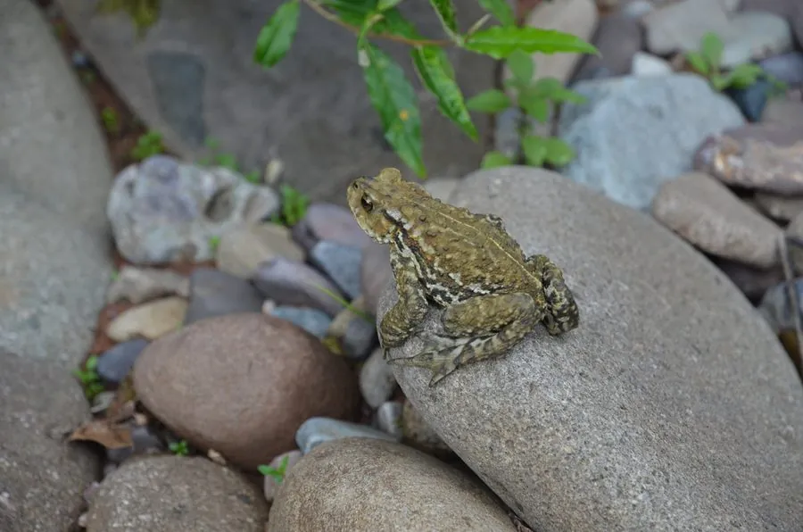

两栖动物 · 动物界
华西蟾蜍 Bufo andrewsi

中国西部常见的蟾蜍，皮肤粗糙，耳后腺发达，栖息于高原草地、农田和林缘，夜间捕食昆虫，能分泌蟾酥。
- 分类
- 门脊索动物门纲两栖纲目无尾目科蟾蜍科属蟾蜍属
- 栖息环境
- 海拔 1500–3000 米的高原草地、农田、林缘和村庄附近
- 地理分布
- 中国四川、云南、贵州、甘肃、陕西等地
- 保护级别
- IUCN 无危（LC）；中国“三有”保护动物
物种志
华西蟾蜍体长 7–10 厘米，雌蟾大于雄蟾。皮肤粗糙，密布疣粒，背面呈黄褐色、灰褐色或橄榄褐色，散布深色斑块，腹面灰白色；耳后腺发达，呈肾形，能分泌乳白色毒液；四肢粗短，趾间蹼不发达，常以爬行方式活动。
它分布于中国四川、云南、贵州、甘肃、陕西等地，栖息于海拔 1500–3000 米的高原草地、农田、林缘和村庄附近，白天藏在土洞、石缝和草丛中，夜间捕食昆虫、蜘蛛、蠕虫和蜗牛。繁殖期在春季，雄蟾聚集在溪流、水塘中鸣叫，雌蟾产下长串胶质卵带，蝌蚪约两个月变态。华西蟾蜍能捕食大量农业害虫，其耳后腺分泌物可制蟾酥，但毒液本身有毒，接触后需洗手，中国将其列入“三有”名录。
形态与习性
- 食性昆虫、蜘蛛、蠕虫和蜗牛
- 体长约 7–10 cm，雌蟾更大
- 繁殖春季产下长串胶质卵带，蝌蚪约两个月变态
- 毒性耳后腺分泌蟾酥毒液，接触后需洗手
- 活动节律夜行性，白天藏在土洞和石缝中
- 寿命野外约 8–10 年
趣味知识
- 华西蟾蜍的耳后腺呈肾形，分泌的蟾酥是传统中药材。
- 它生活在海拔两三千米的高原上，是中国西部常见的两栖动物。
- 华西蟾蜍夜间在农田捕虫，对控制害虫数量有明显作用。